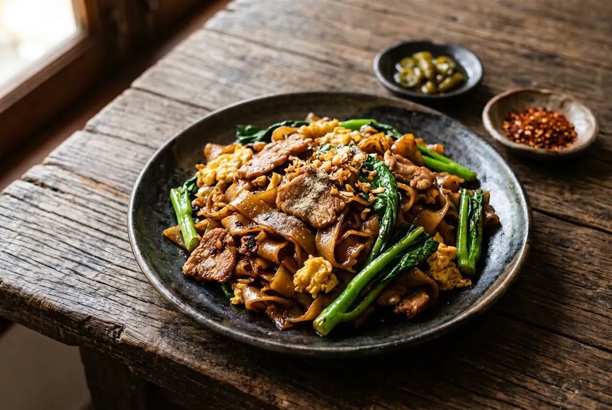

Fresh wide rice noodles charred in a very hot wok, dark soy caramelised on the metal, pork marinated in ice water, kale at the end. The burnt edges are the point.

The name is Cantonese, literally "stir-fried with soy sauce" — a dish Thailand borrowed along with the wok. Its Malaysian and Singaporean cousin is char kway teow; its ancestor is chow fun. In Thailand it lives in every street kitchen and every "made-to-order" shop, always next to its sibling, rad na.
San Yod — the Bib Gourmand noodle institution with ten-plus branches across Bangkok — calls it one of the chef-killer dishes: "Both the noodles and the egg must carry the wok's aroma, with good marinated pork and quality kale — cooked plate by plate on a high flame in an iron wok." And then the line that explains the dish: the noodles may look burnt. That's the secret — dark soy hits hot metal, caramelises, and turns the whole plate fragrant.
| Thai | English | Amount |
|---|---|---|
| หมูสันคอ (บาง) | Pork collar, sliced thin | 140 g |
| น้ำตาลทราย | Sugar | ½ tsp |
| ซีอิ๊วขาว | Light soy sauce | ½ tsp |
| ซอสหอยนางรม | Oyster sauce | ½ tsp |
| น้ำมันงา | Sesame oil | ½ tsp |
| พริกไทยป่น | Ground pepper | ¼ tsp |
| น้ำเย็นจัด | Ice-cold water | ½ tbsp |
| Thai | English | Amount |
|---|---|---|
| เส้นใหญ่ | Fresh wide rice noodles (sen yai), teased apart | 250 g |
| ซีอิ๊วดำ | Dark sweet soy — to coat the noodles | ½ tsp |
| กระเทียมสับ | Chopped garlic | 2 tbsp |
| ไข่ไก่ | Eggs | 2 |
| น้ำมันพืช | Vegetable oil | 2–3 tbsp |
| น้ำตาลทราย | Sugar | ½ tbsp |
| ซีอิ๊วขาว | Light soy sauce | ½ tbsp |
| ซอสปรุงรส | Seasoning sauce (green-cap) | 1 tbsp |
| ซอสหอยนางรม | Oyster sauce | 2 tbsp |
| พริกไทยป่น | Ground pepper | ½ tsp |
| คะน้า | Kale (คะน้า), stems separated | 140 g |
| พริกดองน้ำส้ม | Pickled chillies in vinegar — to serve | as liked |
Order of play. San Yod scrambles the egg first, then the noodles, then folds in the blanched pork. Pim's home order: garlic, pork, egg, noodles. Both end at the same place.
Kale. The restaurant blanches it separately; home cooks stir-fry it in last. Stems first is the compromise.
Tenderising. Pim's ice-water trick vs the baking-powder route used by rad-na shops — she gives both.
Balance. Pim cooks salt-leaning with a sweet finish; some shops run sweeter. The table condiments exist because everyone adjusts anyway.
The char. San Yod pushes the burnt edge as the signature; home woks chase a lighter version of the same idea.
This recipe is translated from the following Thai-language sources. Where they disagree, we've said so.
1. Michelin Guide Thailand (27 Oct 2023) — "เปิดสูตรผัดซีอิ๊วรสเด็ดแบบร้านแสนยอด ระดับรางวัลมิชลิน" (San Yod, Bib Gourmand) — guide.michelin.com
2. Pim's Kitchen (ครัวบ้านพิม) — "เส้นใหญ่ผัดซีอิ๊วหมูหมัก" (full home recipe with marinade) — pim.in.th
3. Thai Wikipedia — "ผัดซีอิ๊ว" (origin, Chinese influence) — th.wikipedia.org
4. Khaosod / Sentang Sedtee (26 Dec 2023) — "เปิดสูตรผัดซีอิ๊วระดับโลก ร้านแสนยอด รางวัลมิชลิน" — khaosod.co.th